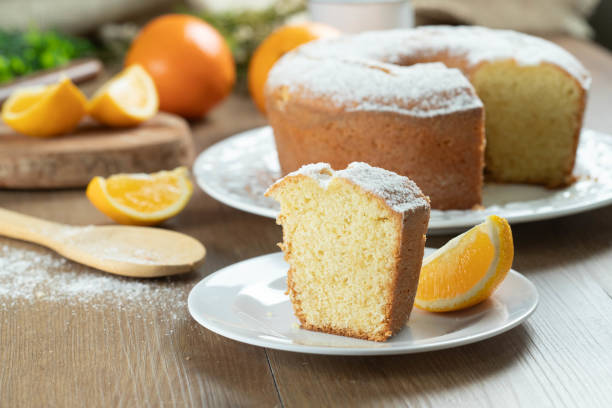

Receita de bolo para meu amor
Bolo de laranja
Ingredientes
- 2 xícaras de farinha de trigo
- 1 xícara de açúcar
- 1/2 xícara de suco de laranja
- 3 ovos
- 1 colher de sopa de fermento em pó
Modo de Preparo
- Passo 1:
- Preaqueça o forno a 180°C.
- Passo 2:
- Em uma tigela, misture todos os ingredientes até obter uma massa homogênea.
- Passo 3:
- Despeje a massa em uma forma untada e enfarinhada.
- Passo 4:
- Leve ao forno por aproximadamente 40 minutos ou até que um palito inserido no centro saia limpo.
Dicas
- Para um sabor ainda mais intenso, adicione raspas de laranja à massa.
- Sirva o bolo com uma cobertura de glacê de laranja.
PUC Minas web site